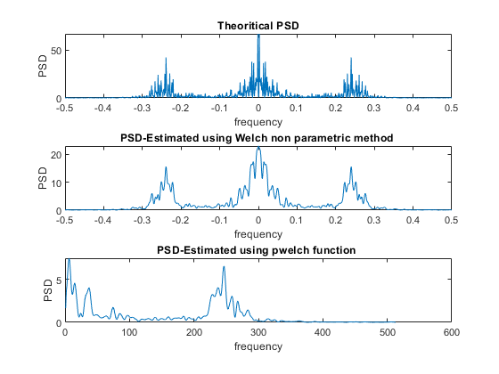

N=1000;
sigma = 1;
noise = sigma.*normrnd(0,sigma,1,N);
b = 1;
a = [1, -0.9, 0.81, -0.729];
x = filter(b, a,noise);
f = fftshift(fft(x, 1024));
f_hat=linspace(-1,1,1024)*1/2;
subplot(3,1,1);
plot(f_hat,(abs(f).^2/N)*(sigma^2));
xlabel( "frequency");
ylabel("PSD");
title(" Theoritical PSD ")
L = 7;
D = 125;
M = (N + (L-1)*D)/L;
y = [];
for block = 1:L
y(:,block) = x((block-1)*D+1:(block -1)*D + M );
end
w = hamming(M);
sq_w = w.*w;
U = sum(sq_w)/M;
win_sig = [];
fft_sig = [];
for block = 1:L
win_sig(:,block) = y(:,block).*w;
fft_sig(:,block) = fft(win_sig(:,block),1024);
power(:,block) = (abs(fft_sig (:,block)).^2)./(M*U);
end
p_welch = power(:,1);
for block = 2:L
p_welch = p_welch + power(:, block);
end
p_welch = p_welch / L;
subplot(3,1,2);
plot(f_hat,fftshift(p_welch));
xlabel( "frequency");
ylabel("PSD");
title("PSD-Estimated using Welch non parametric method ");
subplot(3,1,3);
pxx = pwelch(x,w,0,1024);
plot(pxx);
xlabel( "frequency");
ylabel("PSD");
title("PSD-Estimated using pwelch function ");
print(gcf,'05a.png','-dpng','-r300');
